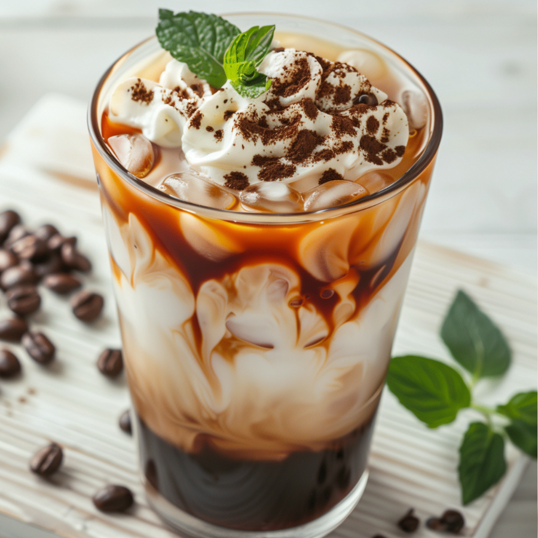
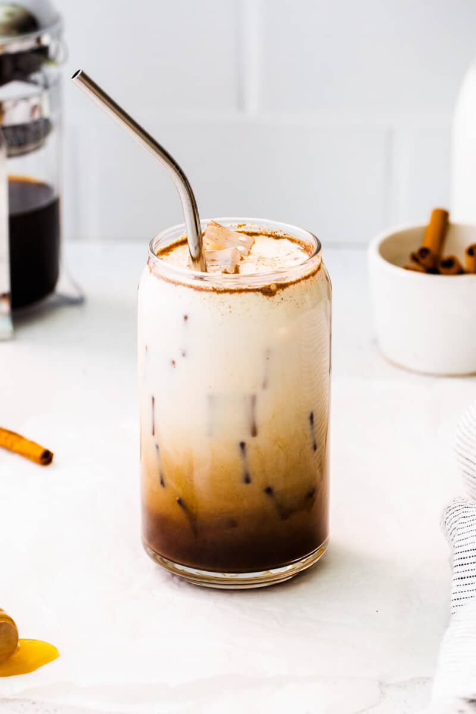
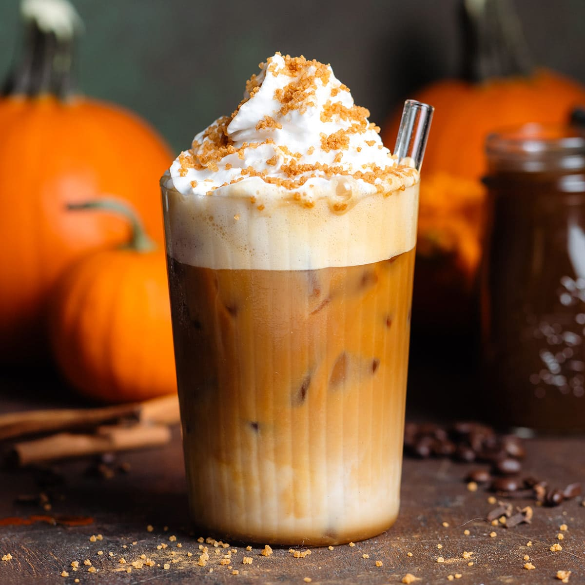

RECIPE
Nutty Dark Chocolate Cold Brew
- Starbucks® Cold Brew Multi-Serve Concentrate Naturally Flavored Dark Chocolate Hazelnut
- 6 oz water
- 1 Tbsp Vanilla Syrup
- Ice
- Almondmilk

RECIPE
Iced Honey Cinnamon Latte
- 2 shots of Starbucks® Espresso Roast for Nespresso® Vertuo
- Honey Cinnamon Syrup
- Sprinkle of ground cinnamon
- 1/2 cup 2% milk
- Ice

'
RECIPE
Pumpkin Spice Latte
- Milk in a Nespresso® Aeroccino frother.
- Brew Starbucks® Espresso Roast or Brew a Starbucks® by Nespresso® Espresso Roast
- Homemade Pumpkin Spice Syrup